create-vue 是 Vue 官方推荐的项目初始化工具，用于快速搭建基于 Vue3 的项目，提供了一个简单快捷的方式来创建新的 Vue 项目
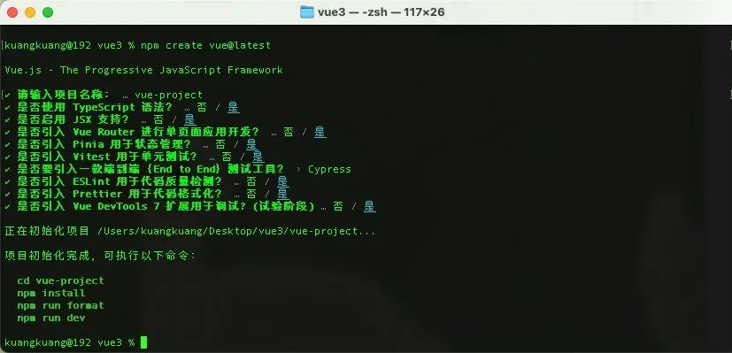
安装：
npm create vue@latest
Github 仓库地址：https://github.com/vuejs/create-vue
Vue3 完全支持 TypeScript，使得开发者可以在项目中享受到 TypeScript 提供的类型安全和开发效率。
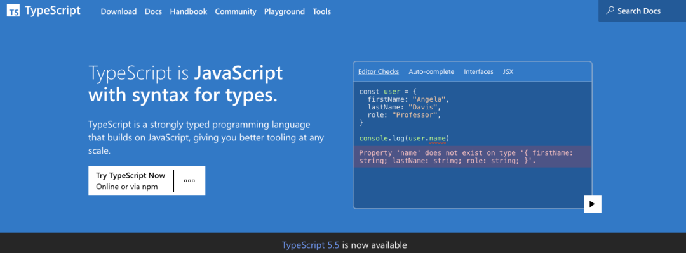
安装：
npm install typescript --save-dev
Github 仓库地址：https://github.com/microsoft/TypeScript
Vue Router V4 是官方的路由管理器，专为 Vue3 设计。它提供了一种声明式的方式来定义导航和页面路由，使得构建单页面应用（SPA）变得更加容易
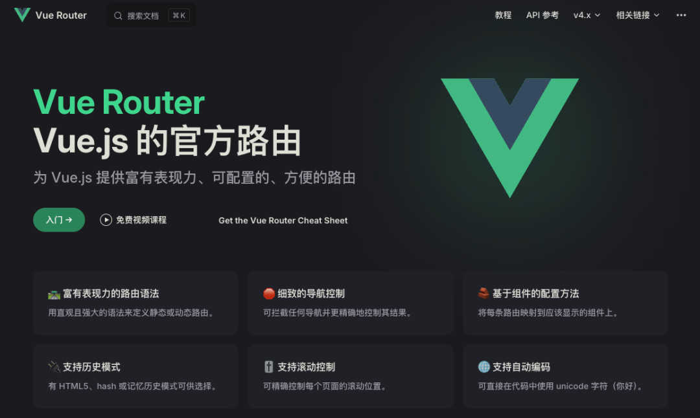
安装：
npm install vue-router@4
Github 仓库地址：https://github.com/vuejs/router
Pinia 是 Vue 3 的官方状态管理库，它提供了一个直观、类型安全的状态管理方式，并且易于与 TypeScript 集成。
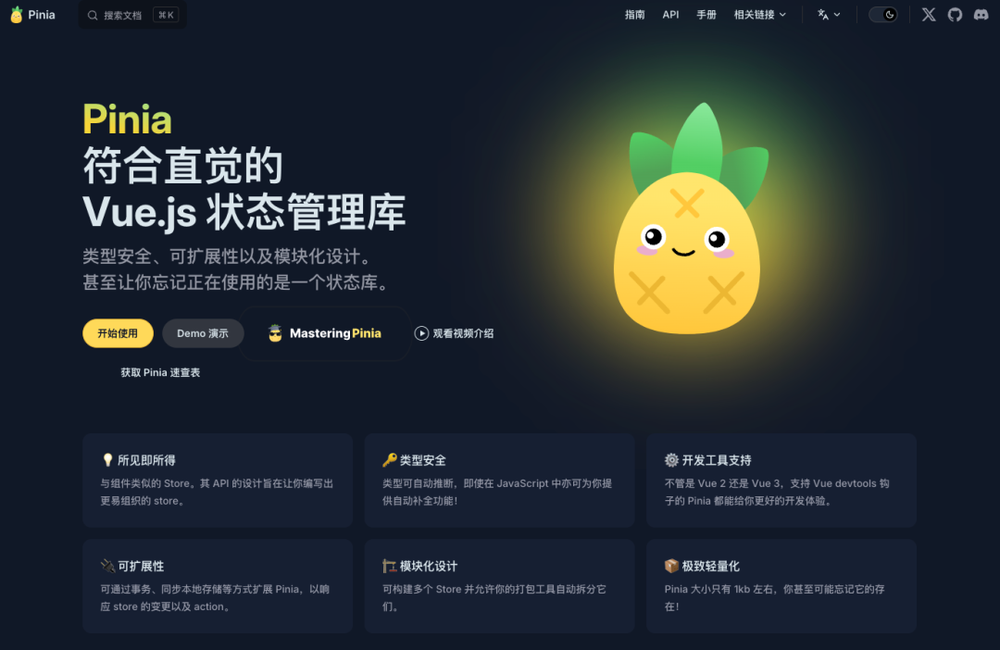
安装：
npm install pinia
Github 仓库地址：https://github.com/vuejs/pinia
另外推荐一款 Pinia 数据持久化插件：pinia-plugin-persistedstate，可以用来对 Store 中的数据做本地持久化存储
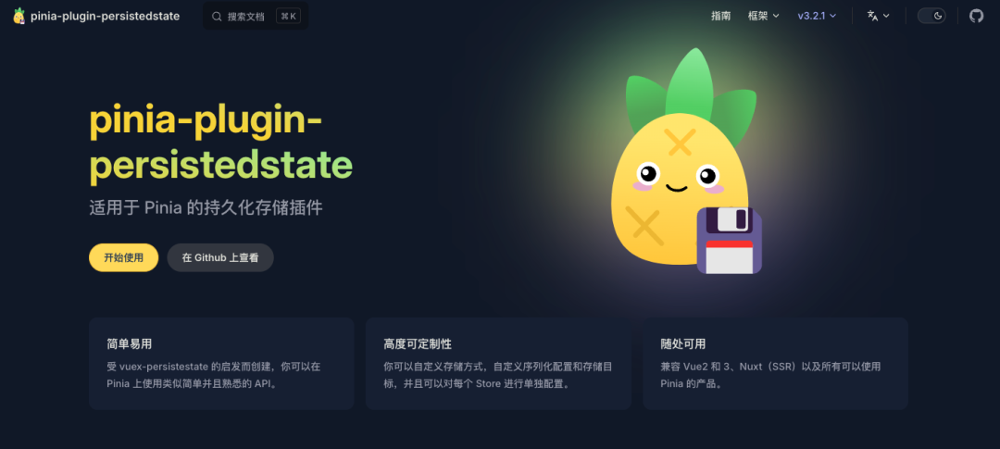
npm i pinia-plugin-persistedstate
Github 仓库地址：https://github.com/prazdevs/pinia-plugin-persistedstate
Vite 是 Vue3 官方推荐的前端构建工具，以其快速的热更新和构建速度而闻名，极大提升了开发体验。
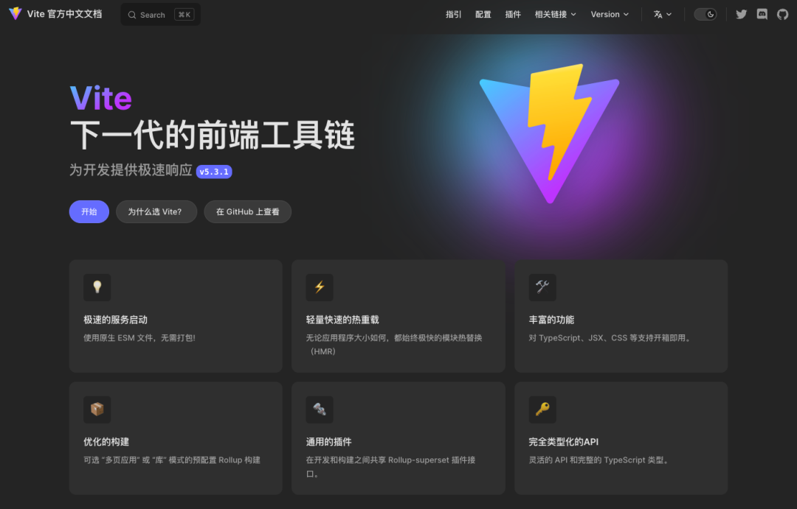
npm create vite@latest
Github 仓库地址：https://github.com/vitejs/vite
VueUse 是一个功能强大的 Vue.js 生态系统工具库，它提供了一系列的可重用的 Vue 组件和函数，帮助开发者更轻松地构建复杂的应用程序。
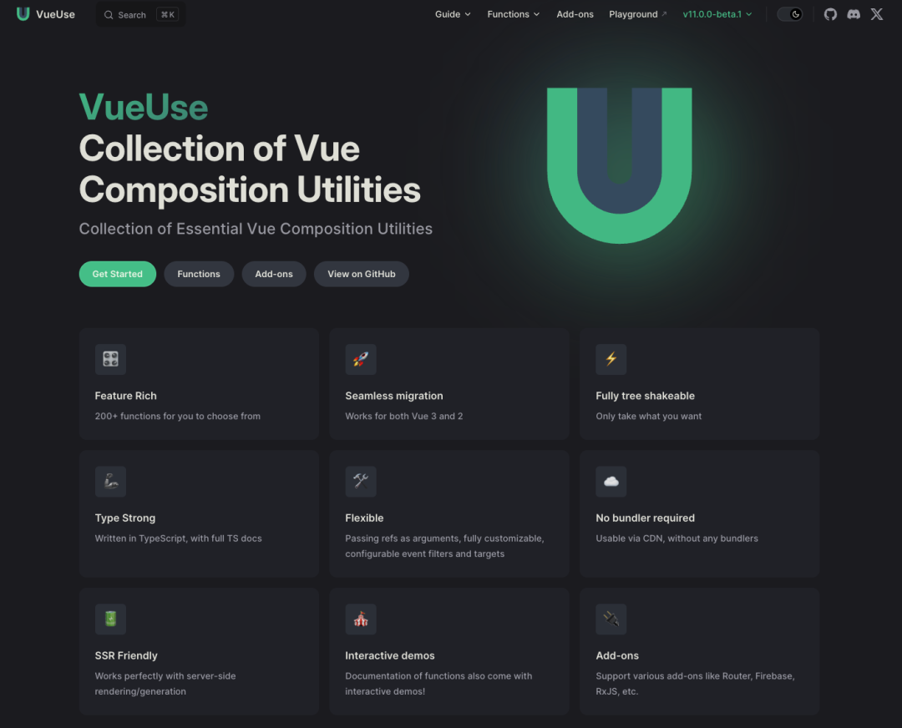
npm i @vueuse/core
Github 仓库地址：https://github.com/vueuse/vueuse
ESLint 和 Prettier 的结合使用，帮助开发者维护代码质量和风格一致性。
ESLint:
一个开源项目，可帮助你查找和修复 JavaScript 代码中的问题。它内置于大多数文本编辑器中，你也可以在持续集成管道中运行 ESLint。
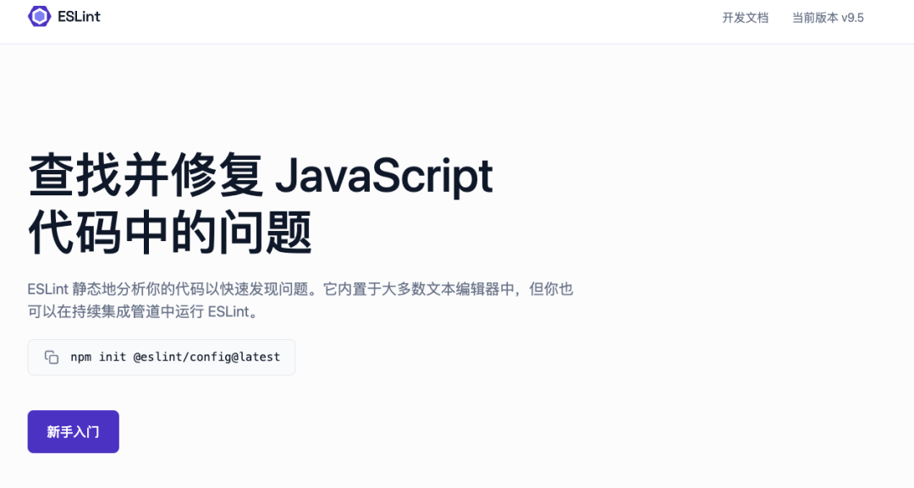
安装：
npm init @eslint/config@latest
Github 仓库地址：https://github.com/eslint/eslint
Prettier:
一个支持多种编程语言和编辑器的代码格式化工具，可以按保存键时自动格式化代码，节省时间和精力
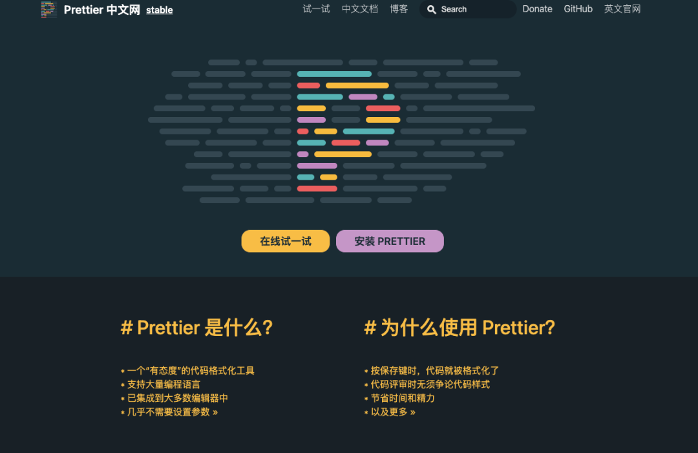
安装：
npm install --save-dev --save-exact prettier
Github 仓库地址：https://github.com/prettier/prettier
UnoCSS 是一个原子化 CSS 引擎，可以自动生成原子 CSS 类，减少 CSS 的冗余并提高开发效率。
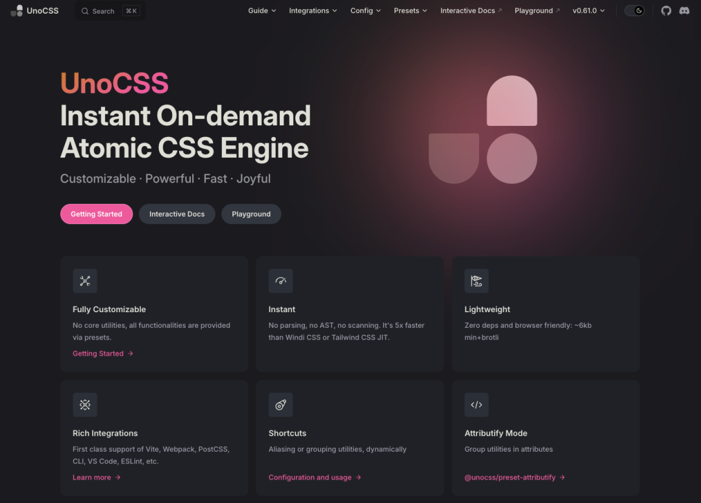
安装：
npm install -D unocss
Github 仓库地址：https://github.com/unocss/unocss
Element Plus:
基于 Vue 3 的 Element UI 组件库，提供了一套完整的 UI 组件。
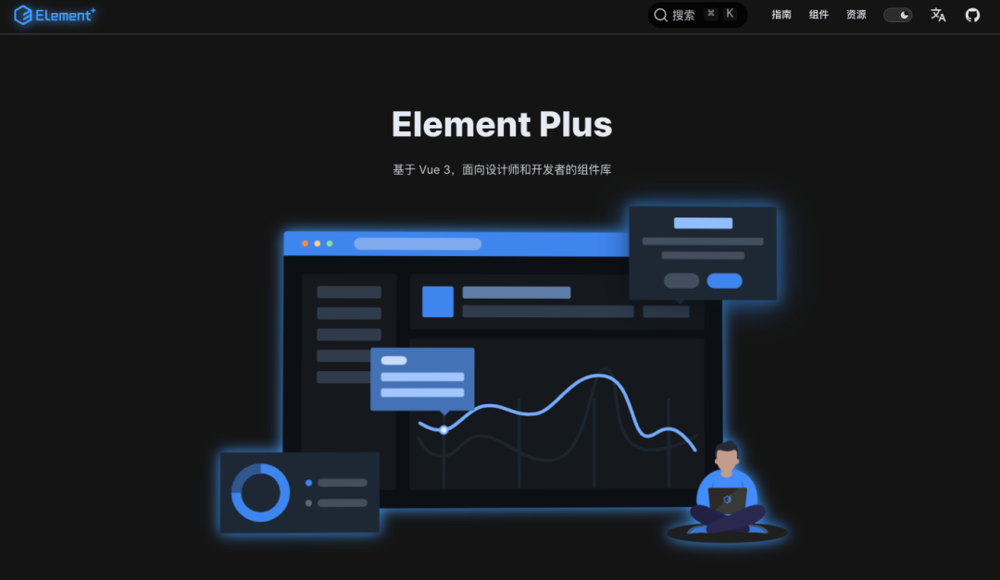
安装：
npm install element-plus --save
Github 仓库地址：https://github.com/element-plus/element-plus
一个风格清新、易于使用的 Vue3 组件库，尤大大力荐。
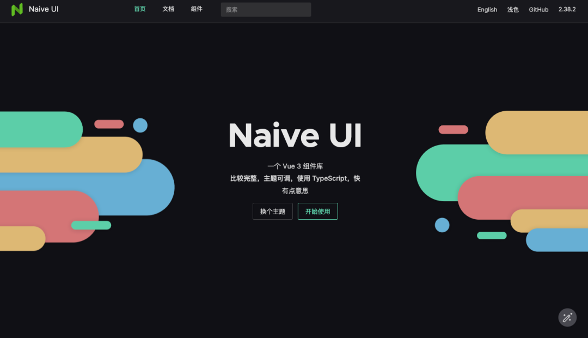
安装：
npm i -D naive-ui
Github 仓库地址：https://github.com/tusen-ai/naive-ui
相信使用 Vue 的同学应该对 Vue Devtools 浏览器插件并不陌生，但是有些同学由于网络问题无法下载安装插件，所以今天给大家推荐一款更好用的插件
vite-plugin-vue-devtools
vite-plugin-vue-devtools 插件，无需浏览器安装，直接使用 npm 安装即可使用，并且界面也很美观，功能更加强大。
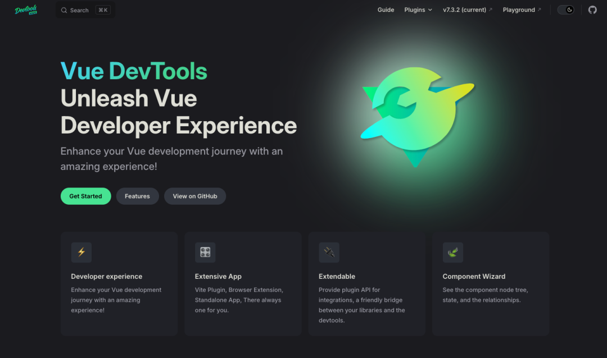 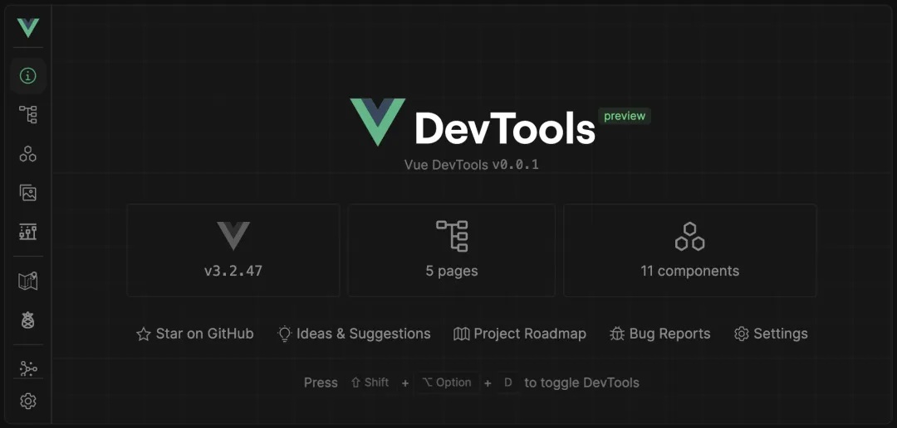
安装：
npm add -D vite-plugin-vue-devtools
Github 仓库地址：https://github.com/webfansplz/vite-plugin-vue-devtools
uni-app 是一个使用 Vue 语法的跨平台开发框架，可以编译到 iOS、Android、Web（包括 Vue3）等平台。
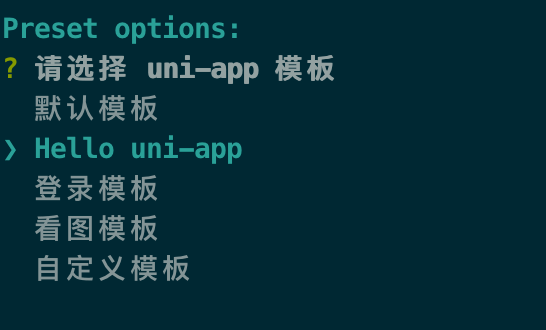
安装：
npx degit dcloudio/uni-preset-vue#vite-ts my-vue3-project
Github 仓库地址：https://github.com/dcloudio/uni-app
Vite-electron 是一个基于 Vite 和 Electron 的桌面应用开发框架，允许开发者使用 Vue3 开发桌面应用。
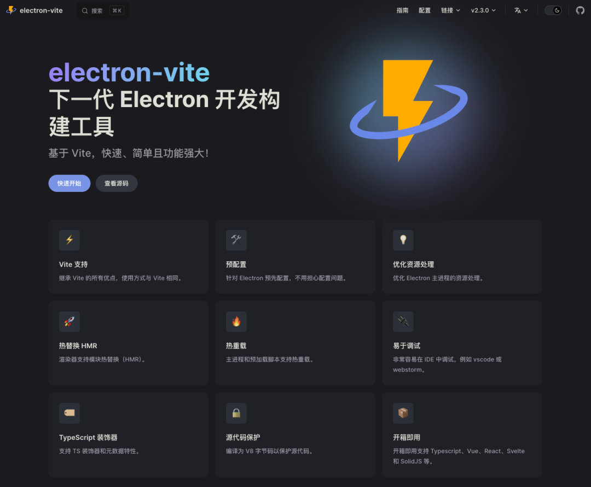
安装：
npm i electron-vite -D
Github 仓库地址：https://github.com/alex8088/electron-vite
VitePress 是一个静态站点生成器，基于 Vue3 和 Vite，专为构建快速、以内容为中心的网站而设计。
安装：
npm add -D vitepress
Github 仓库地址：https://github.com/vuejs/vitepress
Nuxt 是一个基于 Vue 的框架，提供了服务端渲染（SSR）、静态生成（SSG）和 PWA 等功能，非常适合构建高性能的 Web 应用。
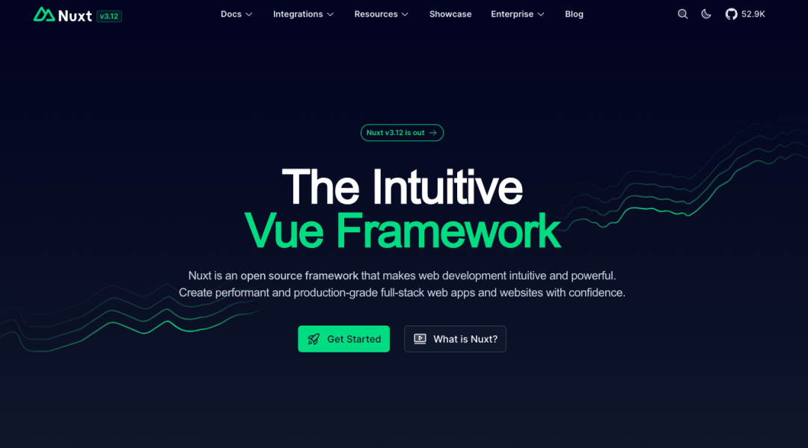
安装：
npx nuxi@latest init <project-name>
Github 仓库地址：https://github.com/nuxt/nuxt